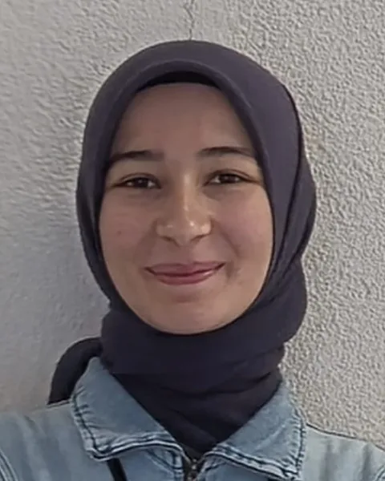

Team
MAVIS is developed by two engineers: one from biomedical engineering, one from electrical and electronics engineering.
-

Biomedical engineeringSıla Elif Kocasaraç
Experimental design, solution preparation, voltammetric measurement and dataset quality control.
LinkedIn -
Electrical and electronics engineering
Batu Arıbakır
Preprocessing, model development and adaptation, explainability and the web interface.
LinkedIn
Every task in the development plan names a lead: biomedical engineering, electrical and electronics engineering, or both together. The Dashboard shows the current split.